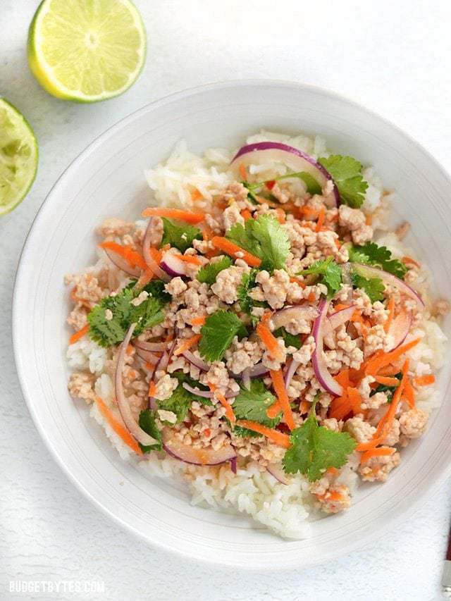

Nam Sod/Larb (Thai Pork Salad)

Nam Sod is a vibrant and freshly flavored pork (or turkey) salad
drenched with a lime, ginger, and chili dressing. Light, filling,
and flavorful!
Ingredients:
- 1/4 cup fresh lime juice (about 2 limes)
- 1 Tbsp fish sauce
- 1.5 Tbsp grated fresh ginger
- 1/2 Tbsp chili garlic sauce or sambal oelek
- 1 lb. ground pork or turkey
- 3 cloves garlic
- 1/2 Tbsp canola oil
- 1/2 red onion
- 1 carrot
- 1/4 bunch cilantro
- 1/2 cup unsalted peanut
- 4 cups cooked rice (optional)
Instructions:
- Make the dressing first to allow the flavors time to blend.
In a small bowl combine the fresh lime juice, fish sauce,
fresh grated ginger, and chili garlic sauce. Stir to combine,
taste, and adjust the fish sauce, chili garlic sauce, or ginger
to your liking. The dressing should be very potent.
- Add the ground pork to a large non-stick skillet along with
1/2 Tbsp canola oil and one minced clove of garlic. Cook the
pork over medium heat, breaking it up into small pieces as it
cooks, until it is cooked through (about five minutes). Drain
off any excess fat and allow the pork to cool a few minutes, or
until it is no longer hot.
- While the pork is cooking, peel and shred the carrot using a
large holed cheese grater or mandolin. Slice the red onion into
very thin strips. Pull the cilantro leaves from the stems.
- Transfer the cooled pork to a bowl, add the prepared dressing,
and stir to combine. Add the shredded carrot, sliced red onion,
cilantro, and peanuts. Stir to combine again. Serve the salad over
a bed of cooked rice, shredded greens, or fill large lettuce leaves
with the mixture for lettuce wraps.
recipe © BudgetBytes